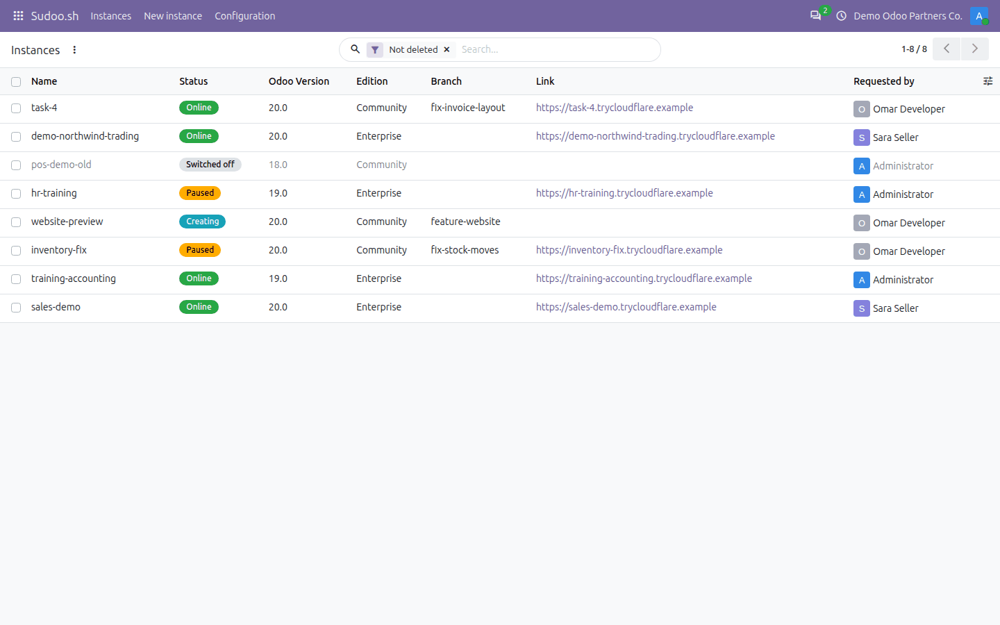
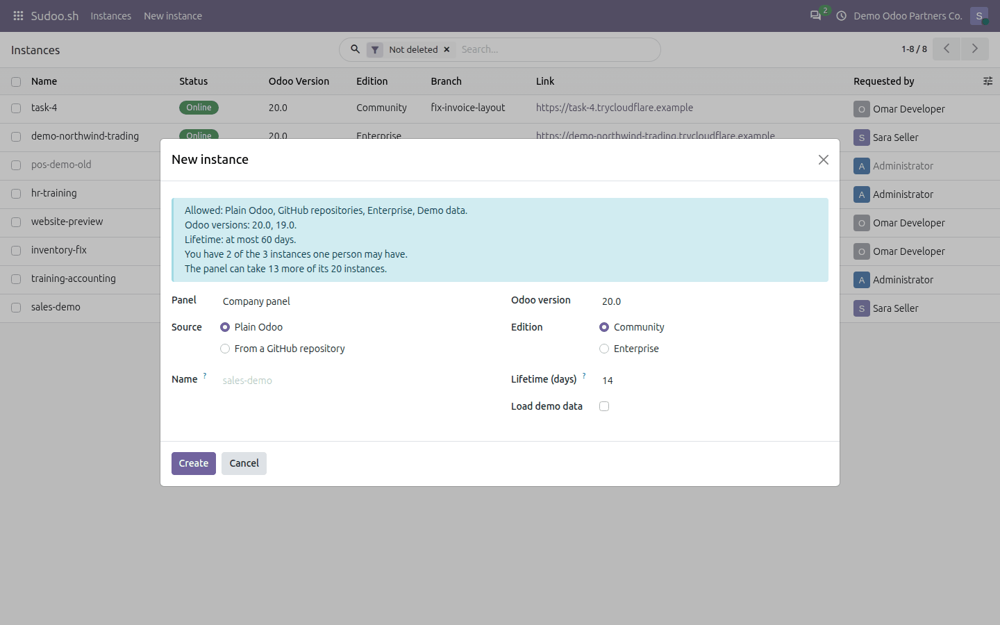
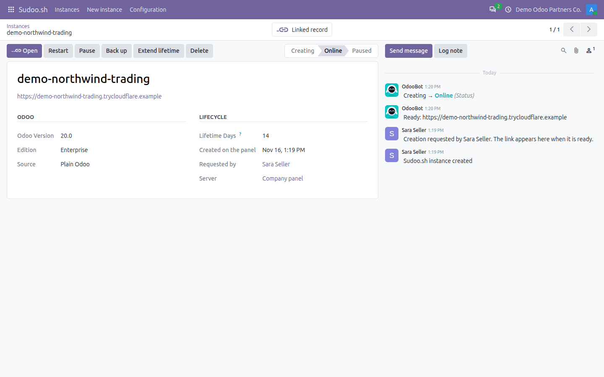
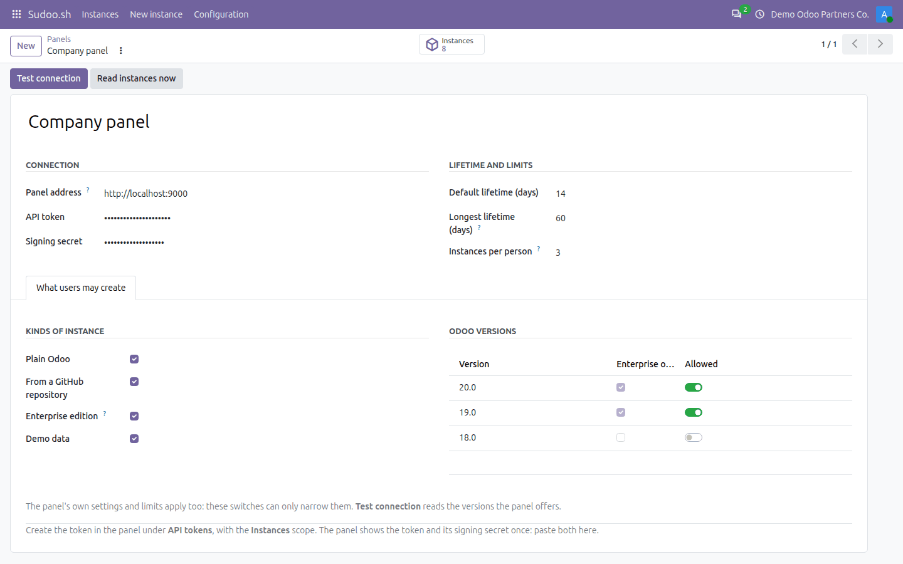

More Sudoo.sh apps
Install only what your team uses. The add-ons install the Instance Manager with them.
Sudoo.sh for Odoo
Create and manage your Odoo demo, test and training instances without leaving Odoo. Your administrator decides what people may create; everyone else gets a simple wizard and a live list.
Sales wants a fresh demo for a prospect, a consultant wants to try a configuration, a developer wants a branch running before it is merged. With the Instance Manager they create it from Odoo in a few clicks, and the link arrives in the record's chatter as soon as it is ready.
Plain Odoo or a GitHub repository and branch, version, edition, name, lifetime and demo data. It only offers what is allowed.
Status, version, branch, link and owner of every instance, refreshed every minute from the panel.
Open, start, pause, restart and back up. Administrators extend lifetimes and delete (the panel keeps a backup).
Choose the allowed kinds, versions, Enterprise, demo data, the longest lifetime and how many instances one person may have.
The wizard says what is allowed, what is not, and how much room the panel has left, before anyone clicks Create.
Add instances to any model with one mixin and two hooks. The CRM, Project and Helpdesk apps are built exactly this way.




Two access levels. Sudoo.sh / User sees the company's instances and creates, starts, pauses, restarts and backs them up within the limits the administrator set. Sudoo.sh / Administrator also connects panels, decides what users may create, extends lifetimes and deletes instances.
Least privilege on the panel. Use a panel token with the Instances scope: it can only list, create, start, pause, restart, back up, extend and delete instances, never read passwords, logs, backups, accounts or settings. Each call names the Odoo user behind it, signed, so the panel's audit log and per-person limits show the real person.
Secrets stay with administrators. The panel's API token and signing secret are visible to Sudoo.sh administrators only. Every request to the panel is signed (HMAC-SHA256, timestamp and one-time nonce), redirects are never followed, and the panel address must use https.
Checked on the server. Every limit (kinds of instance, versions, Enterprise, demo data, lifetime, instances per person) is checked again when the instance is created, whatever the form sent. Users can read instances but never edit them directly.
Multi-company. Panels and instances are kept to their own companies.
Yes. These apps manage the instances of a Sudoo.sh panel, the self-hosted server that runs your Odoo demo, test and training instances. Connect it once under Sudoo.sh, Configuration, Panels.
Yes, free to use, also in companies. It is proprietary software of Sudoo.sh: you may extend it with your own modules, but not publish or sell copies.
Yes. The apps include a full Arabic translation; it is used as soon as Arabic is installed in your database.
Your company's Odoo 17.0, 18.0, 19.0 or 20.0 (choose the matching download). The instances you create can be any version your panel offers.
Yes. Depend on sudoo_base, inherit sudoo.instance.mixin, and add the two buttons to your form. The developer guide in the repository shows it in a few lines.
Install only what your team uses. The add-ons install the Instance Manager with them.
Write to support@sudoo.sh. We answer every message.
Proprietary software of Sudoo.sh, free to use (Odoo Proprietary License v1.0). Odoo is a trademark of Odoo S.A.; Sudoo.sh is not affiliated with Odoo S.A.